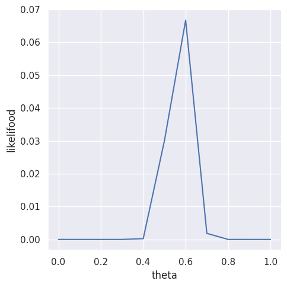
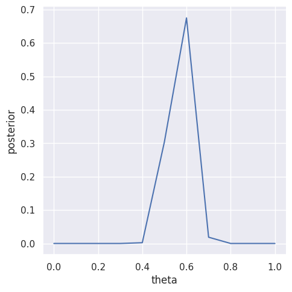
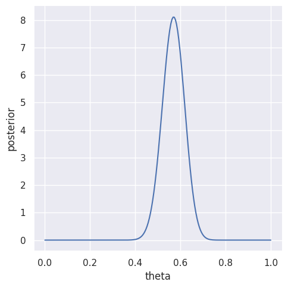

3.1 標本調査#
import pandas as pd
import numpy as np
from scipy import stats, signal, special
import seaborn as sns
import warnings
sns.set_theme()
warnings.simplefilter("ignore")
サンプルサイズ:
\(N=100\)
変数\(Y\)
\(i\)番目の人が政策を支持しているとき: \(Y_i = 1\)
\(i\)番目の人が政策を支持していないとき: \(Y_i = 0\)
a#
\(Pr(Y_1 = y_1, \cdots, Y_{100} = y_{100})\) を簡単な形で表す#
\(Y_1 , \cdots, Y_{100}\) が条件付き独立ということから、
\[
Pr(Y_1 = y_1, \cdots, Y_{100} = y_{100})
= \prod _{i=1} ^{100} Pr(Y_{i} = y_{i} | \theta)
\]
と書ける。
期待値 \(\theta\) をもつ二値確率変数の分布関数は
\[
Pr(Y_{i} = y_{i}|\theta)
= \theta^{y_i} (1 - \theta) ^{1 - y_i}
\]
と表すことができる。（これはベルヌーイ分布である）
以上より、
\[\begin{split}
\begin{aligned}
Pr(Y_1 = y_1, \cdots, Y_{100} = y_{100})
&= \prod _{i=1} ^{100} \theta^{y_i} (1 - \theta) ^{1 - y_i} \\
&= \theta^{\sum _{i} y_i} (1 - \theta) ^{100 - \sum _{i} y_i}
\end{aligned}
\end{split}\]
と表すことができる。 （これは互いに独立で同一のパラメータのベルヌーイ分布に従う100個の確率変数の同時確率である）
\(Pr(\sum _{i} Y_{i} = y | \theta)\) を求める#
\(Y = \sum _{i} Y_{i}\) とすると、 確率変数 \(Y\) はパラメータ \((n=100, \theta)\) を持つ二項分布に従う。 よって、確率分布は
\[
Pr(\sum _{i} Y_{i} = y | \theta)
= \binom{100}{y}\theta^{y}(1 - \theta)^{100 - y}
\]
となる。
b#
Y = 57
N = 100
df_3_1 = pd.DataFrame()
df_3_1["theta"] = np.linspace(0.0, 1.0, 11)
# 二項分布の確率関数から確率を計算
df_3_1["likelifood"] = df_3_1["theta"].apply(
lambda theta: stats.binom.pmf(k=Y, n=N, p=theta)
)
df_3_1
| theta | likelifood | |
|---|---|---|
| 0 | 0.0 | 0.000000e+00 |
| 1 | 0.1 | 4.107157e-31 |
| 2 | 0.2 | 3.738459e-16 |
| 3 | 0.3 | 1.306895e-08 |
| 4 | 0.4 | 2.285792e-04 |
| 5 | 0.5 | 3.006864e-02 |
| 6 | 0.6 | 6.672895e-02 |
| 7 | 0.7 | 1.853172e-03 |
| 8 | 0.8 | 1.003535e-07 |
| 9 | 0.9 | 9.395858e-18 |
| 10 | 1.0 | 0.000000e+00 |
_ = sns.relplot(
df_3_1,
x="theta",
y="likelifood",
kind="line",
)

c#
ベイズルールを用いると
\[
p\left(\theta | \sum _{i=1}^{100} Y_{i} = 57 \right)
=
\frac{
p(\sum _{i=1}^{100} Y_{i} = 57 | \theta)p(\theta)
}{
p(\sum _{i=1}^{100} Y_{i} = 57)
}
\]
と書ける。
ここで、\(\theta\) について事前情報がないということから、
\[\begin{split}
\begin{aligned}
p(\theta) &= \frac{1}{11} \\
p \left(\sum _{i=1}^{100} Y_{i} = 57 \right) &= \sum _{\theta} p \left(\sum _{i=1}^{100} Y_{i} = 57 | \theta \right) \times \frac{1}{11}
\end{aligned}
\end{split}\]
である。
# thetaの事前分布
# すべての値に対して 1 / 11
prior_theta = 1 / 11
# 周辺尤度
marginal_likelihood = df_3_1["likelifood"].sum() * prior_theta
print(f"{marginal_likelihood=}")
df_3_1["posterior"] = df_3_1["likelifood"].mul(prior_theta).div(marginal_likelihood)
df_3_1
marginal_likelihood=0.008989041496797676
| theta | likelifood | posterior | |
|---|---|---|---|
| 0 | 0.0 | 0.000000e+00 | 0.000000e+00 |
| 1 | 0.1 | 4.107157e-31 | 4.153701e-30 |
| 2 | 0.2 | 3.738459e-16 | 3.780824e-15 |
| 3 | 0.3 | 1.306895e-08 | 1.321705e-07 |
| 4 | 0.4 | 2.285792e-04 | 2.311695e-03 |
| 5 | 0.5 | 3.006864e-02 | 3.040939e-01 |
| 6 | 0.6 | 6.672895e-02 | 6.748515e-01 |
| 7 | 0.7 | 1.853172e-03 | 1.874172e-02 |
| 8 | 0.8 | 1.003535e-07 | 1.014907e-06 |
| 9 | 0.9 | 9.395858e-18 | 9.502335e-17 |
| 10 | 1.0 | 0.000000e+00 | 0.000000e+00 |
_ = sns.relplot(
df_3_1,
x="theta",
y="posterior",
kind="line",
)

d#
df_3_1_continuous = pd.DataFrame()
n_points = 200
df_3_1_continuous["theta"] = np.linspace(0, 1, n_points)
df_3_1_continuous["likelihood"] = df_3_1_continuous["theta"].apply(
lambda theta: stats.binom.pmf(k=Y, n=N, p=theta)
)
df_3_1_continuous.head()
| theta | likelihood | |
|---|---|---|
| 0 | 0.000000 | 0.000000e+00 |
| 1 | 0.005025 | 2.834059e-103 |
| 2 | 0.010050 | 3.285211e-86 |
| 3 | 0.015075 | 2.875599e-76 |
| 4 | 0.020101 | 3.052907e-69 |
_ = sns.relplot(
df_3_1_continuous,
x="theta",
y="likelihood",
kind="line",
)

e#
df_3_1_posterior = pd.DataFrame()
n_points = 200
df_3_1_posterior["theta"] = np.linspace(0, 1, n_points)
a = 1 + Y
b = 1 + N - Y
df_3_1_posterior["posterior"] = df_3_1_posterior["theta"].apply(
lambda theta: stats.beta.pdf(x=theta, a=a, b=b)
)
df_3_1_posterior.head()
| theta | posterior | |
|---|---|---|
| 0 | 0.000000 | 0.000000e+00 |
| 1 | 0.005025 | 2.862400e-101 |
| 2 | 0.010050 | 3.318063e-84 |
| 3 | 0.015075 | 2.904355e-74 |
| 4 | 0.020101 | 3.083436e-67 |
_ = sns.relplot(
df_3_1_posterior,
x="theta",
y="posterior",
kind="line",
)

b, cの図は同じ形でスケールだけ異なる
d, eの図は同じ形でスケールだけ異なる